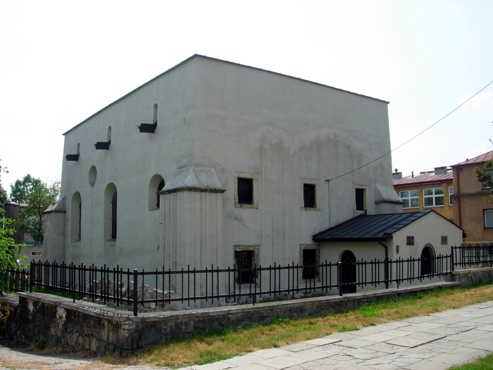

Muzeum Regionalne w Pińczowie
Muzeum położone w Pińczowie. Placówka jest miejską jednostką organizacyjną. Muzeum powstało w 1963 roku, natomiast działalność wystawienniczą rozpoczęło w 1970 roku. Od początku mieści się w budynkach dawnego, popaulińskiego zespołu klasztorny. Obecnie zajmuje część zachodniego, północnego oraz wschodniego skrzydła parteru kompleksu, wraz z zejściem do gotyckich piwnic.